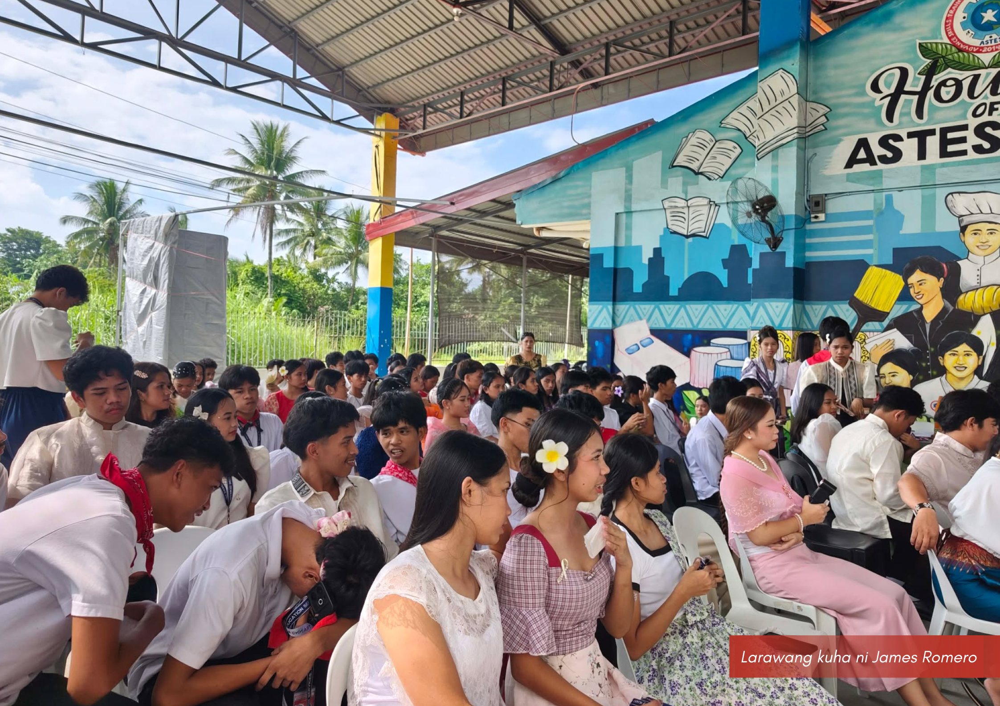

Pagsisindi ng Sulo ng Lakasayahan — Tanda ng pagsisimula ng tunggalian sa palakasan, sinindihan na ang Sulo ng Lakasayahan para sa taong 2026 sa pangunguna ng Sports Club, kasama ang kinatawan ng bawat kuponan

Buwan ng Wikang Pambansa 2026 — Tagumpay ang Astesian sa pagdiriwang ng Buwan ng Wikang Pambansa 2026, sa pangunguna ng Samahang Filipino.